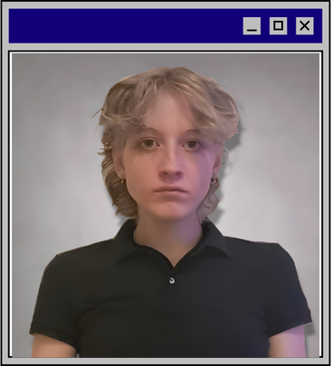
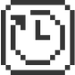
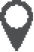

Joy Zwarts
Student Software Engineering

WhoAmI
Ik ben Joy, ik ben 18 jaar en studeer Software
Engineering op de haagse hogeschool. Ik zit in mijn
eerste semester van het tweede jaar. Ik maak deze
site voor het vak Webprogramming, Frameworks &
Usability. In mijn vrije tijd houd ik van Gamen,
Kleien, Schilderen, Tekenen, Naaien en dingen doen
met vrienden. Op deze site documenteer ik vooral
mijn programmeer opdrachten, zoals mijn process
van het maken van deze site op mijn Blog pagina.
Mijn vorige opdrachten stel ik ten toon op mijn
portfolio pagina. Veel plezier met het navigeren van
mijn site :)

Vorige Opleidingen
2012 - 2020
Basisschool

De Melodie, Rijswijk
Projecten:
- Kinderrechten Ambassadeur
2020 - 2025
Middelbare School
Stanislascollege Westplantsoen, Delft
Projecten:
- Cambridge English C1 Diploma
- Foto Jaarboek Commissie
- Profielwerkstuk
- HAVO Diploma
2025 - 2029
HBO-ICT (Software Engineering)
Haagse Hogeschool, Den Haag
Projecten:
- Challenge project basissemester
- Hotelsimulatie Semester 2